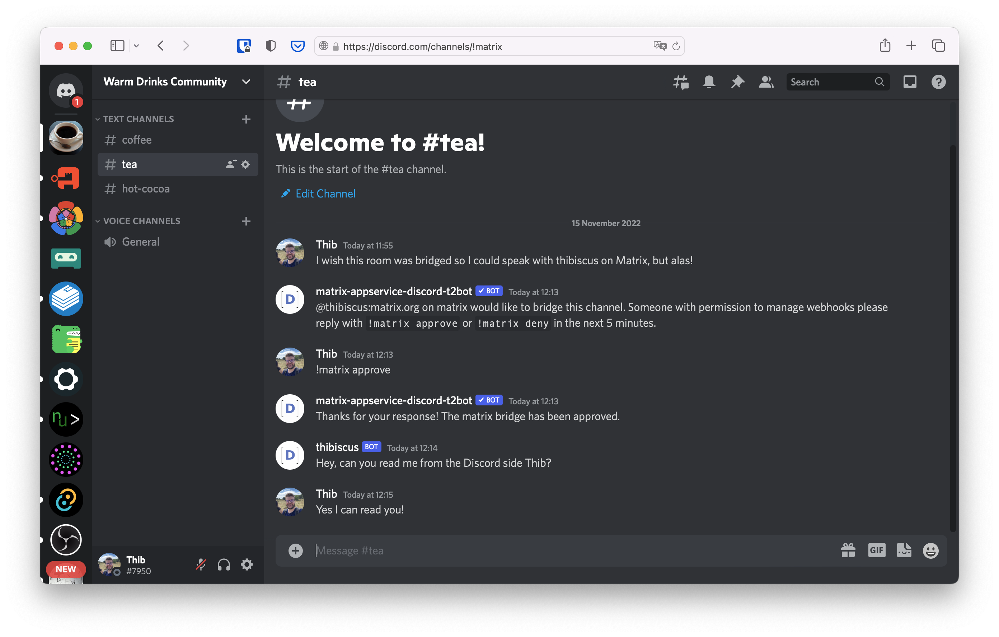
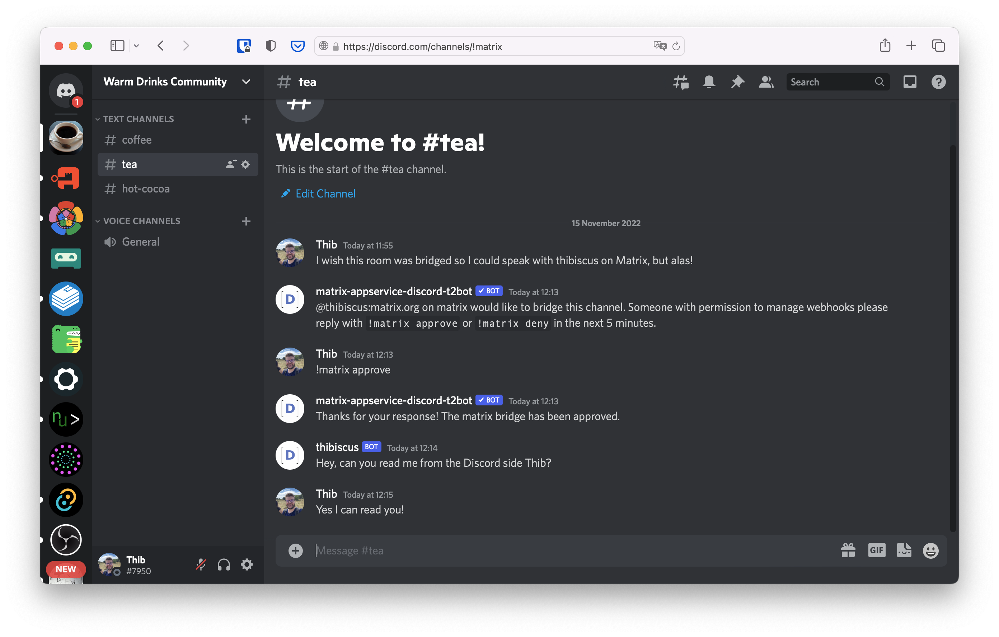

Getting Started
We strongly recommend getting familiar with Matrix as an individual. It's easy to use and to get started, but the amount of clients and providers in the wild can make things overwhelming for newcomers. Follow the users documentation to get started using Matrix as an individual.
For this tutorial we're going to assume your provider (homeserver) is Matrix.org. You will see later that Matrix's flexibility allows you to start a community on Matrix.org and then move to another provider if you want. You can also bridge your existing community to Matrix to progressively migrate people without a traumatic big platform switch.
Here are a couple of screenshots to see how a thriving community can look like on Matrix.
 

We recommend you to set up a dummy community to play around first, and then you can move on creating your full community and/or bridging your existing one to Matrix.
The first thing to do whether you are starting a new community or trying to bridge one to Matrix is to create a Space for it. You can think of Matrix Spaces as equivalents of Slack Workspaces, or Discord Servers. They're a way to group people and rooms.
Creating & sharing a Space
Click on the + on the leftmost column of Element to create a new Space

In this example, we're creating a public space for people who enjoy warm drinks.

You can add a picture, name and description for your Space to be easier to find and for people to have a good idea about what's happening in your community.

Note there's also an address field. The address of your Space consists of a name
(sometimes called the local part) and of the domain of your provider. Here the
provider domain is matrix.org because we're creating the space from an account
that was created on Matrix.org
People can join your Space if it's public and you give them the address, which is much easier to jot down or to memorise than a full matrix.to link!
Later if you decide to deploy your own provider or to rent one as a service (see the list of providers we're aware of for more details), you will be able to add new addresses to this Space and change the main one.
You can then add a couple of rooms to get started with the basics... and voilà, you now have a community on Matrix!
Adding rooms
You can play around in the rooms, but look! We forgot to create a room for people who enjoy hot cocoas! Click on the Space avatar in the left bar to go to the Space's index

From there you can see the list of all the rooms in your Space. The rooms you see in the left panel are the rooms you are a member of, and the rooms you see in the main panel are all the rooms in your Space. Since you're the administrator of the Space they're the same to you, but that will not necessarily be the case for new joiners.
Click on "Add" then on "New room" to create the room for hot cocoa drinkers.

Here again, you can give the room a name, a description, an address, and make it public or private.

Note that you can create a private room in a public Space. People who are not members of this room will not see it in the Space index, and people who are member of this room will see it in their room list when they're in this Space. There's a third mode: visible to members of the Space. You can change the room visibility at any point in the room settings.
History visibility
The room visibility is not the only important parameter in a room. You can also change the history visibility so people can either:
- Not see what was said in this room before they joined
- See what happened since the option was selected
- See what happened since they were invited in the room
- See what happened since they joined
To change this setting, click on the i on the top right, then on "Room
settings"

Alternatively you can click on the room name in the header and click on "Settings"

Finally head to the "Security & Privacy" tab

There is no best practice here, it depends entirely on your preferences and what you want for your community.
Basic Moderation
For a good overview of what are roles, power levels, redactions, and how to keep a group safe at the room level, please head to the group chat documentation.
Advanced moderation
Basic moderation is enough for small groups, but it tends not to scale too well as the number of people and rooms in a community grow. Indeed, the basic moderation decisions you take are only enforced room by room. If you wanted to ban someone from your entire community, you would have to ban them from all the rooms manually. Tedious, and not efficient!
The Matrix.org Foundation created a bot called mjolnir, which you could consider as the security guard of your community. You tell it in a control room to perform certain actions against one or a group of individuals, and the mjolnir bot enforces it in all the rooms. More information in the moderation section.
Moving to another provider
The community you have just created with an account on matrix.org will have
room addresses ending with :matrix.org. This is not an issue, but if you want
to get addresses ending with :your-org.com, you need to get your own Matrix
instance for that domain.
Additionally, moving to your own provider will give your administrators more control over rooms and accounts created there. One of the appeals of Matrix is its decentralised nature. But some organisations may need to have local centralisation of power to stay in control of their official communications.
Finally, if you get your own Matrix instance, you can deploy your own bridges too and you should see a general improvement in performance over matrix.org which can sometimes be a bit busy. More information in the dedicated section.